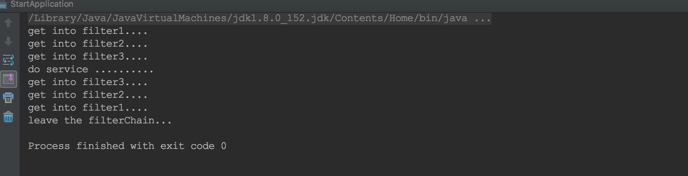

前言
责任链模式在过滤器相关的地方用得比较多，netty中的ChannelPipeLine也使用了责任链模式，以下是百度的介绍：“在责任链模式里，很多对象由每一个对象对其下家的引用而连接起来形成一条链。请求在这个链上传递，直到链上的某一个对象决定处理此请求。发出这个请求的客户端并不知道链上的哪一个对象最终处理这个请求，这使得系统可以在不影响客户端的情况下动态地重新组织和分配责任。”责任链模式未采用多线程，其实在性能上我认为并不比多线程差，因为单线程减少了锁的竞争，另外在模型上也很清晰，非常方便进行扩展与维护。
实现
以下是个人的实现
//Filter接口
public interface Filter {
void doFilter(Request request, Response response, FilterChain filterChain);
}
//具体实现Filter
public class Filter1 implements Filter {
@Override
public void doFilter(Request request, Response response, FilterChain filterChain) {
System.out.println("get into filter1....");
filterChain.doFilter(request, response, filterChain);
}
}
//请求pojo
public class Request<T> {
T t;
public Request(T t) {
this.t = t;
}
}
//响应pojo
public class Response<T> {
T t;
public Response(T t) {
this.t = t;
}
}
public class FilterChain implements Filter {
private List<Filter> filters;
private int index;
/**
* 0 mains get in,1 mains get out;
*/
private int flag;
public FilterChain() {
filters = new ArrayList<Filter>();
index = 0;
flag = 0;
}
public void addFilter(Filter filter) {
filters.add(filter);
}
@Override
public void doFilter(Request request, Response response, FilterChain filterChain) {
if (index == filters.size()) {
flag = 1;
index --;
System.out.println("do service ..........");
//do service, asyn or syn;
//...
//...
//...
//...
doFilter(request, response, filterChain);//get out
return;
} else if (index == -1 && flag == 1){
System.out.println("leave the filterChain...");
return;
}
if (flag == 0) {
Filter filter = filters.get(index++);
filter.doFilter(request, response, filterChain);
} else if (flag == 1){
Filter filter = filters.get(index--);
filter.doFilter(request, response, filterChain);
}
}
}
//启动类
public class StartApplication {
public static void main(String[] args) {
FilterChain filterChain = new FilterChain();
filterChain.addFilter(new Filter1());
filterChain.addFilter(new Filter2());
filterChain.addFilter(new Filter3());
Request<String> request = new Request<String>("test request");
Response<String> response = new Response<String>("test response");
filterChain.doFilter(request, response, filterChain);
}
}
以下是运行结果
